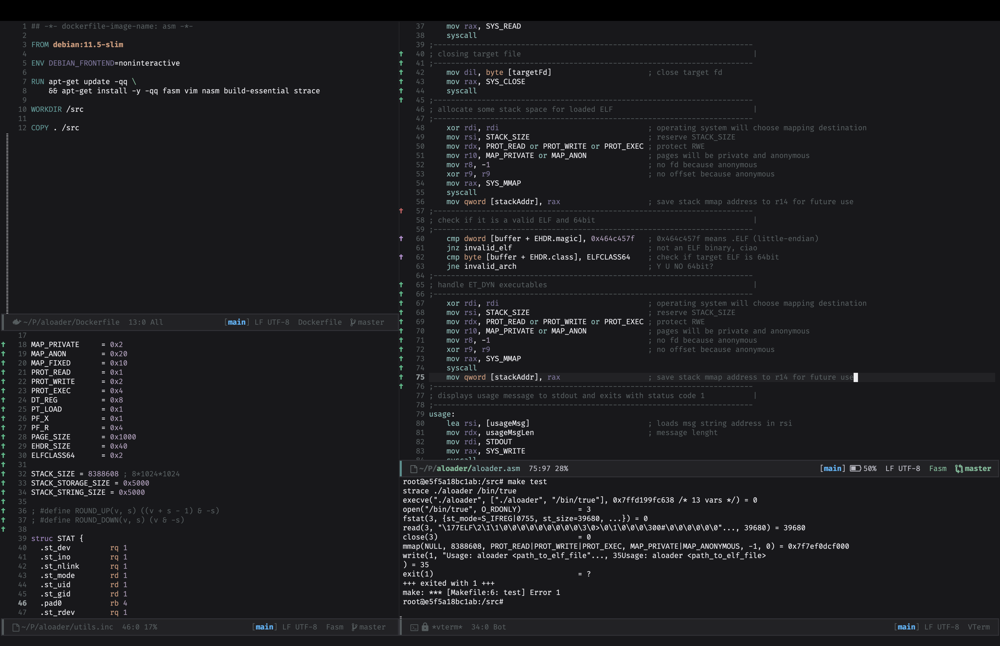

┌───────────────────────┐
▄▄▄▄▄ ▄▄▄▄▄ ▄▄▄▄▄ │
│ █ █ █ █ █ █ │
│ █ █ █ █ █▀▀▀▀ │
│ █ █ █ █ ▄ │
│ ▄▄▄▄▄ │
│ █ █ │
│ █ █ │
│ █▄▄▄█ │
│ ▄ ▄ │
│ █ █ │
│ █ █ │
│ █▄▄▄█ │
│ ▄▄▄▄▄ │
│ █ │
halfexec: Assembly x64 ELF Linux Loader │ █ │
~ TMZ └───────────────────█ ──┘
┌────────────────────────────────────────────┐
│ ET_EXEC • ET_DYN • PT_INTERP • TLS │
│ half an execve, all the fun parts │
└────────────────────────────────────────────┘
halfexec
│
├── halfexec.asm
├── utils.inc
├── Makefile
│
├── tests
│ │
│ ├── exec_static.c
│ ├── nolib.c
│ ├── exec_asm.asm
│ └── argv_nolib.c
│
└── runtime
│
├── validate.inc
├── reloc.inc
├── interp.inc
├── stack.inc
├── rwdata.inc
├── rodata.inc
└── trampoline.inc
Download
halfexec.tgz
-= The Half-Loader Series: 1/3
This article is the first part of a series for tmp.0ut volume 5:
1.
halfexec (you are here!)
Rebuild enough of
execve in userspace to load familiar ELF blobs.
2.
halfshelf
Restrict the input to one static PIE, then remove its head.
3.
phork
Shove the stripped image, its metadata and its loader into one file.
The articles work on their own, but the intended reading order is as numbered
above. Keep in mind that the codebase for the projects is quite dense as expected
from ASM.
-= Introduction
ELF is one of those formats that quietly gets away with a lot.
You run a file, Linux nods, something eventually lands in
_start, and most
of the interesting machinery disappears behind the curtain. Convenient, but
also a little unsatisfying.
What actually has to happen before control reaches user code? How much of that
path can we reproduce from userspace? And how far can we go before the whole
thing stops being a fun loader and starts turning into a (very) sad knockoff of
execve(2)?
Here's my answer to that. A small x64 Linux ELF loader written in
FASM.
(of course it is). It took me almost 4 years (!!!) to "finish" it, but during
this time, I changed it a lot and used it to create new projects too. Here's
an image I posted on Twitter when I started coding it, in late 2022:

https://x.com/guitmz/status/1589057858985156609
I named it
halfexec because:
- it is not the kernel
- it is not a full dynamic linker
- it is not the whole execution path
I guess one can say I was lacking creativity at that point.
The goal was to build something small enough to read, but enough to run mundane
ELFs. The initial versions were simple and worked fine for super specific
small executables but then a rabbit hole formed and, with each commit, I was
adding more features, supporting more ELFs, getting mad deep diving into the
the internals of this amazing file format.
That means supporting cases like:
-
ET_EXEC
-
ET_DYN / PIE
- static and dynamic libc binaries
- tiny no-libc samples
-
PT_INTERP handoff for normal dynamically linked binaries and
BusyBox
(which was essentially my main target during the development of the loader)
Oh and I really wanted something in Assembly that I could use for other projects.
If you want to skip ahead and just run the thing:
$ make
$ HALFEXEC_DEBUG=1 ./halfexec /bin/true
make run builds and exercises the whole test matrix in one go, if you
would rather see every supported shape pass at once.
-= What The Loader Actually Does
At a high level:
1. parse its own startup stack to find the target path
2. open the target and stage the whole file in memory
3. validate the ELF header
4. decide whether it is dealing with
ET_EXEC or
ET_DYN
5. map the main image
6. optionally load the interpreter from
PT_INTERP
7. optionally apply a small relocation subset for direct entry
ET_DYN
8. optionally build a minimal TLS runtime state
9. rebuild a fresh stack with
argc,
argv,
envp and
auxv
10. jump to the right entry point (I hope)
At first glance, it sounds almost civilized, but of course, the details are
where all the funny bugs live.
-= A Tiny Map Of ELF Loading
Before getting into
halfexec's choices, it helps to separate an ELF file
from the process image it describes. An ELF is not copied wholesale to one
address and executed. The loader reads the ELF header, follows the program
header table, and treats each program header as an instruction about how to
construct the new address space.
Sections such as
.text,
.data,
.dynsym and
.rela.dyn are
mostly the linker's view of the file. At execution time, the important table is
the program header table: entries such as
PT_LOAD,
PT_INTERP,
PT_DYNAMIC and
PT_TLS describe what the runtime really needs.
ELF file process memory
┌──────────────────┐ ┌──────────────────────┐
│ ELF header │── e_phoff ──────>│ loader reads PHDRs │
├──────────────────┤ ├──────────────────────┤
│ program headers │── PT_LOAD RX ───>│ code mapping │
│ │── PT_LOAD RW ───>│ data + zeroed BSS │
│ │── PT_INTERP ────>│ dynamic linker image │
├──────────────────┤ ├──────────────────────┤
│ segment bytes │──── copy/map ───>│ mapped segment bytes │
└──────────────────┘ └──────────────────────┘
For every
PT_LOAD, the loader combines two kinds of information:
-
p_offset and
p_filesz: which bytes come from the file
-
p_vaddr and
p_memsz: where they live and how much memory exists
-
p_flags: whether the final pages are readable, writable or executable
When
p_memsz is larger than
p_filesz, the remaining bytes are
filled with zeros. That is how uninitialized data such as
.bss appears in
memory even though those zeroes do not occupy space in the file.
The last part is process startup state. Mapping code is not enough: the entry
point expects a stack in a specific kernel layout.
map segments
│
v
relocate / prepare TLS if needed
│
v
┌──────────────── initial stack ────────────────┐
│ argc │ argv[] │ NULL │ envp[] │ NULL │ auxv │
└───────────────────────────────────────────────┘
│
entry = load_bias + e_entry
│
v
_start
For a static direct entry image, control can go to the executable's entry
after relocations and stack construction. If
PT_INTERP is present, the
named dynamic linker is mapped too. Control goes to its entry point while
auxiliary vector entries such as
AT_ENTRY,
AT_PHDR and
AT_PHNUM
still describe the main executable. The dynamic linker then finishes symbol
resolution before eventually transferring control to the program.
That is the broad job normally hidden inside
execve(2).
halfexec
does not reproduce every kernel and dynamic linker feature, but it follows this
same skeleton closely enough.
-= First Things First
One design decision was made early and it shaped everything else: the loader
maps the whole file into memory first.
Could this be done in a more elegant or more scalable way? Yeah. But I wanted to
avoid yet another complexity in this already dense code to avoid a staging buffer.
It is, however, a totally valid improvement to be done at some point.
Anyway, reading the full target into memory keeps a lot of things pleasantly simple:
- header validation is straightforward
- program header iteration is easy
-
PT_INTERP path extraction is trivial (I see this as "trivial" now, but
definitely not back then)
- segment population can be done by copying bytes from buffer to mapping
- the
ET_EXEC child path can duplicate the staged image into scratch memory
The tradeoff: files must fit in the fixed buffer. For a small loader meant to
be read by humans, that feels like a fair deal, I suppose.
-= ET_DYN And ET_EXEC Are Not the Same Problem
This is the most important split in the loader. It would be tempting to think
of
ET_EXEC and
ET_DYN as mostly the same thing with a few small
differences. In practice, that mindset just makes the code worse.
--[
ET_DYN
ET_DYN is the "nice" case. Since the image is relocatable, the loader can:
- scan all
PT_LOAD segments
- compute the lowest and highest virtual address span
- reserve one adjacent anonymous mapping
- derive a load bias from that reservation
- place each
PT_LOAD at
base + p_vaddr
That is nice and cute. That is the kind of ELF shape that wants to cooperate.
--[
ET_EXEC
ET_EXEC is a different story. Its virtual addresses are fixed, that is fine
when the kernel creates a fresh address space for the process but much less
fine when a userspace loader is already running inside the same process and
tries to map the target right on top of itself.
To deal with that, we cheat (respectably). The loader prepares everything it
can in the parent, then
forks. The child copies a small trampoline plus the
staged ELF into a scratch mapping and jumps there. From that scratch code, it
is finally safe to
MAP_FIXED the target segments at their real
ET_EXEC
addresses without smashing the running loader text it still depends on.
That was one of the most satisfying parts of the whole project to get working.
It is also the kind of thing that makes you appreciate why the kernel normally
does this in a brand new process image and calls it a day.
The fork/trampoline split, trimmed down to the interesting part:
forkTransformExec:
mov rax, SYS_FORK
syscall
test rax, rax
js forkFailed
test rax, rax ; zero means we are now executing in the child process
jz .child
; parent: wait4() the child and mirror its exit status, then we are done
...
.child:
; Scratch mapping layout:
; [EXEC_CTX][trampoline code][padding][staged ELF file image]
;
; The trampoline runs entirely from this high scratch area while it remaps
; the ET_EXEC PT_LOAD segments to their final fixed virtual addresses
...
The parent never touches
MAP_FIXED at all. Only the child, running from
scratch memory it does not depend on, is allowed to overwrite the addresses
the original loader text still lives at.
-= Where The Trouble Starts
Most of the real work in any ELF loader is around
PT_LOAD.
Once a segment is identified as loadable, the loader has to:
- round the segment start down to a page boundary
- account for any in page offset between that page boundary and
p_vaddr
- round the total mapping length up to a full page size
-
mmap writable memory at the final destination
- copy the file bytes
- zero the
memsz - filesz tail for
.bss
- translate ELF
PF_* flags into Linux
PROT_*
-
mprotect the segment to its final permissions
The kind of thing a hobbyist computer virus writer like me enjoys and is
familiar with. Nothing there is individually exotic, but there are many small
ways to get it wrong (even more so when writing the damn thing in Assembly):
- confusing file offsets with runtime addresses
- forgetting that
filesz can be smaller than
memsz
- forgetting page alignment
- assuming ELF permission bits match Linux protection bits directly
For the last item, they do not, by the way (why would they).
PF_R/PF_W/PF_X
and
PROT_READ/PROT_WRITE/PROT_EXEC do NOT share the same bit positions.
That is exactly the kind of stupid little detail that steals hours of your
life if you are not paying attention.
Concretely:
PF_X = 0x1,
PF_W = 0x2,
PF_R = 0x4, while
PROT_READ = 0x1,
PROT_WRITE = 0x2,
PROT_EXEC = 0x4. Read
and execute sit on swapped bits between the two sets, write only lines up by
coincidence. The loader's
ELF_FLAGS_TO_PROT macro exists purely to paper
over that mismatch, one
test/
or pair per bit:
macro ELF_FLAGS_TO_PROT flags_reg, out_reg
{
local .no_read, .no_write, .done
xor out_reg, out_reg
test flags_reg, PF_R
jz .no_read
or out_reg, PROT_READ
.no_read:
test flags_reg, PF_W
jz .no_write
or out_reg, PROT_WRITE
.no_write:
test flags_reg, PF_X
jz .done
or out_reg, PROT_EXEC
.done:
}
Nothing clever, just the one place in the whole loader that is allowed to know
both bit layouts at once.
-= PT_INTERP: Knowing When To Stop
One thing I did not want to do here was to let this become a full dynamic linker.
So when a target has
PT_INTERP, the loader does not go down the path of
just implementing the rest of ld-linux too. That way lies madness!
Instead, it does something much more reasonable:
1. validate the interpreter path in the staged target image
2. open and stage the interpreter too
3. map the interpreter as another
ET_DYN image
4. rebuild the stack
5. patch
AT_BASE to the interpreter base
6. jump to the interpreter entry point
The main executable is still the main executable.
AT_ENTRY still describes
its entry point. But final control transfers to the interpreter, because that
is the component responsible for finishing the job in that case.
"It ain't much but it's honest work."
--- Farmer dude from the interwebz memes
-= A Little Relocation Support Goes A Long Way
For direct entry
ET_DYN, the loader intentionally handles only a small
subset of relocations:
-
R_X86_64_RELATIVE
-
R_X86_64_IRELATIVE
I wanted enough relocation logic to support the real test matrix, but not so
much that the project would turn into a relocation petting zoo. For a loader
like this, the smaller subset brings more value.
It also makes the two pass structure very clear:
- first fix plain
RELATIVE relocations
- then run
IRELATIVE resolvers
If you reverse that order, bad things can happen. Resolver code likes running
inside a world where the obvious pointers were already fixed first.
-= Rebuilding The Stack By Hand
Another thing I wanted to make explicit is process entry state.
The loaded program should not keep pointers into the loader's original stack.
That is sloppy and also a very good way to manufacture confusing bugs.
So
halfexec creates its own fresh stack mapping and rebuilds:
-
argc
-
argv[]
-
envp[]
-
auxv[]
It also copies:
- all argument strings
- all environment strings
-
AT_RANDOM
-
AT_PLATFORM
-
AT_BASE_PLATFORM
Then it patches the
auxv entries that need to match the new reality:
-
AT_PHDR
-
AT_PHENT
-
AT_PHNUM
-
AT_BASE
-
AT_ENTRY
-
AT_EXECFN
This was one of those areas where any mistake will have very large
consequences, like:
- forgetting to copy a payload string
- leaving
AT_EXECFN pointed at the old stack
- misplacing the
NULL terminators between
argv,
envp, and
auxv
- getting stack alignment wrong
All of those bugs are deeply educational when they happen to somebody else
and very much less so when they happen to you at 2AM (and often).
-= TLS: Just Enough To Be Useful
I also wanted
PT_TLS binaries to work, at least for the supported matrix.
I had to do a lot of research on this, it was kinda of an unexplored area of ELF
to me until then. That means the loader has to build a minimal TLS layout itself.
In this case it uses:
- the TLS block
- a TCB
- a tiny DTV
Then it points
%fs at the synthetic TCB with
arch_prctl.
This is not a full TLS runtime implementation. It is just enough x64 TLS
setup to make the supported cases work and to keep the mechanism visible in the
code instead of waving it away.
-= Testing Real Shapes Matters
One thing I am happy about is that
halfexec did not stop at a single toy
binary.
It now covers a small but useful matrix of recognizable shapes:
- no-libc
ET_EXEC in C
- no-libc
ET_DYN in C
- no-libc
ET_EXEC in Assembly
- argv focused no-libc regression probes
- libc static
ET_EXEC
- libc dynamic
ET_EXEC
- libc dynamic PIE
ET_DYN
- libc static PIE
ET_DYN
-
PT_INTERP binaries
Your mileage may vary. You'll likely encounter bugs if you run this code with
random ELFs that need more than this loader supports.
Every new shape stresses a different assumption (and stressed my nerves too).
If you only test one "Hello World", almost everything looks fine. The moment
you start mixing
ET_EXEC, PIE,
PT_INTERP, libc startup, TLS and
argv/envp usage, the loader starts telling (usually very loudly) you where
your shortcuts were.
-= How Does It Look Like
Running a
ET_DYN binary with
halfexec in debug mode looks like this:
$ uname -r
6.8.0-64-generic
$ file -b /bin/whoami | cut -d, -f1-4
ELF 64-bit LSB pie executable, x86-64, version 1 (SYSV), dynamically linked
$ readelf -h /bin/whoami
ELF Header:
Magic: 7f 45 4c 46 02 01 01 00 00 00 00 00 00 00 00 00
Class: ELF64
Data: 2's complement, little endian
Version: 1 (current)
OS/ABI: UNIX - System V
ABI Version: 0
Type: DYN (Position-Independent Executable file)
Machine: Advanced Micro Devices X86-64
Version: 0x1
Entry point address: 0x2890
Start of program headers: 64 (bytes into file)
Start of section headers: 41512 (bytes into file)
Flags: 0x0
Size of this header: 64 (bytes)
Size of program headers: 56 (bytes)
Number of program headers: 14
Size of section headers: 64 (bytes)
Number of section headers: 30
Section header string table index: 29
$ HALFEXEC_DEBUG=1 ./halfexec /bin/whoami
halfexec v0.0.1 by TMZ (c) 2026
halfexec: debug tracing enabled
halfexec: target type ET_DYN
halfexec: reserving ET_DYN load window
halfexec: load bias = 0x000077279c35e000
halfexec: synthetic stack base = 0x000077279ba00000
halfexec: mapping PT_LOAD at 0x000077279c35e000
halfexec: mapping PT_LOAD at 0x000077279c360000
halfexec: mapping PT_LOAD at 0x000077279c365000
halfexec: mapping PT_LOAD at 0x000077279c367000
halfexec: loading PT_INTERP image
halfexec: interpreter base = 0x000077279c326000
halfexec: mapping interpreter PT_LOAD at 0x000077279c326000
halfexec: mapping interpreter PT_LOAD at 0x000077279c327000
halfexec: mapping interpreter PT_LOAD at 0x000077279c34f000
halfexec: mapping interpreter PT_LOAD at 0x000077279c35a000
halfexec: rebuilding argc/argv/envp/auxv
halfexec: jumping to interpreter entry = 0x000077279c3432c0
root
Implementing the debug mode in ASM was tedious work, very tedious. It takes a
lot in low level just to print some information to the screen. But I enjoyed
working with the code way more after having it done. Beats endless
gdb
sessions and obscure code comments anytime.
-= How The Code Is Organized
To keep things readable, the loader was split by phase:
-
halfexec.asm keeps the main control flow
-
runtime/validate.inc handles ELF validation and early dispatch
-
runtime/interp.inc handles interpreter loading
-
runtime/reloc.inc handles the direct-entry relocation subset
-
runtime/stack.inc handles TLS and stack rebuilding (I am still a bit
traumatized by this one, not gonna lie)
-
runtime/trampoline.inc handles the
ET_EXEC child transform path
-
runtime/rwdata.inc keeps mutable runtime state
-
runtime/rodata.inc keeps messages and other read only loader data
-
utils.inc keeps constants, structs and macros
That split helped a lot. Assembly gets unreadable very quickly when everything
lives in one giant file and every label tries to do two things at the same time.
There is still a lot going on, but at least now the project reads more like a
guided tour, as much as it can be I guess, and less like a wall of opcodes.
I also tried to add comments to most sections where I thought they would help (if
you read some of my ASM code before you know what to expect). Without them, it
was hard to remember why that "mov rax" was added there 3 months ago, things like
that.
-= Could halfexec Be A Library?
Yes. The phase split above is already most of the conceptual work needed.
The reusable surface could expose validation, address reservation, segment
mapping, relocation, TLS and stack construction as separate entry points over
an explicit loader structure. A caller could select the phases it needs and
provide the policy: accepted ELF types, number of segments, interpreter
support and final handoff.
The current project is not packaged that way because it's not a stable library
ABI. Its includes share one global state layout and assume labels from the main
loader. Turning that into a real library would mean defining ownership, inputs,
clobbers, errors and feature boundaries instead of merely giving the same labels
a nicer directory name.
That refactor is possible and I want to do it. The next articles will reuse the
small phases that fit in order to be self contained.
-= Why This Loader Exists In This Shape
There are plenty of ways to make a loader like this more... ambitious.
- It could support more relocation types
- It could try to validate more of the world
- It could grow into something closer to a full runtime environment
- It could be part of some nefarious business?
All of that would be interesting, to me particularly the last one the most.
-= Final Thoughts
This is not meant to be the last word on ELF loading. It is not hardened. It
does not aim to support every relocation. It is not a new dynamic linker.
It is not trying to compete with the kernel.
What it is meant to do is much simpler:
- show how real ELF loading works
- make ABI details visible
- support common executable shapes people recognize
- stay readable enough that future me, and hopefully other people, can still
learn from it
- use 100% Assembly (duh!)
Sometimes the best systems projects are the ones that make familiar things
look slightly suspicious again for a while.
-= References
[1]
System V ABI: ELF Object File Format
[2]
System V AMD64 ABI
[3]
elf(5)
[4]
execve(2)
[5]
mmap(2)
[6]
getauxval(3)
[7]
ld.so(8)
[8]
Linux fs/binfmt_elf.c
--[
PREV |
HOME |
NEXT ]--
{kind=link}